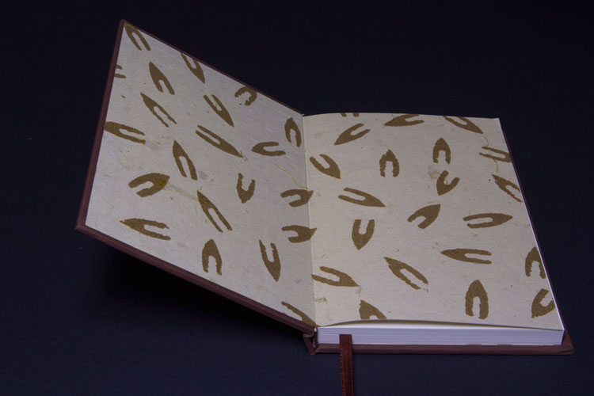
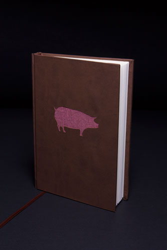

Animal Farm Book
Print / Book design
indesign, Illustrator
For my GrC 439: Book Design Technology class, I knew that I wanted to re-design, edit, sew, and bind my own version of the beloved classic. I created a full bound book that consisted of 16 page signatures which I printed on the Konica Minolta. I then used nylon thread and a needle to stitch my signatures together. I decided to cut a pig out of the front cover of the book as a nod to the main characters and to create a strong symbol for the novel. I was able to achieve this by using the Kongsberg i-xe10.
Endpapers & Front Cover

